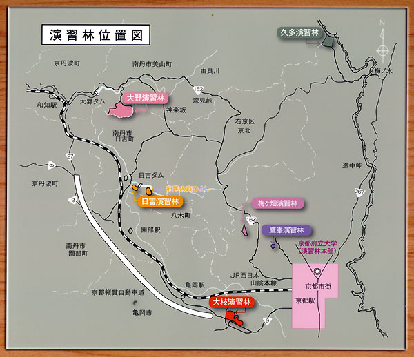

未来を育む、
知恵の森へ。
大学の森「演習林」
京都府立大学は、京都府内の６カ所（大野・大枝・鷹峯・久多・日吉・梅ヶ畑）に大学の森「演習林」を持っています。それぞれの演習林には、スギ・ヒノキ の人工林やブナなどの天然林等、様々な特徴があります。各演習林では、それぞれの特徴を生かして、森林科学科学生の野外実習や学生・教員の研究が行われて います。また「演習林野外セミナー」などの公開講座を通じて、府民にも親しまれています。森林科学（あるいは林学）に関する学科が設置されている大学においては、大学の附属施設として教育研究林（演習林）が設置され、森林科学の教育の場及び 試験研究の場として利用されています。 それと同時に、演習林では継続した森林経営を実践するため、経営計画に基づいて、間伐による立木の伐採及び販売や 新植・補植・下刈り・枝打ちといった森林の手入れが行われています。京都府立大学が持つ演習林は、京都府立農林学校時代に設置された大枝及び鷹峯演習林、そして京都府立農林専門学校への昇格に際して獲得した大野演習林、 さらに１９８３年（昭和５８年）に久多、１９８６年（昭和６１年）に日吉並びに
２００８年（平成２０年）に梅ヶ畑演習林を加えて、総面積７１０．３９ヘク タールに達しています。


アクセス

| 演習林名 | 車でのアクセス | 公共交通機関 |
|---|---|---|
| 大野演習林 南丹市美山町 |
約65km / 1時間50分 | JR和知駅下車、南丹市営バスで「肱谷橋」へ、徒歩約30分 |
| 大枝演習林 京都市西京区 |
約24km / 50分 | 京阪京都交通バスで「沓掛西口」または「老の坂峠」下車すぐ |
| 鷹峯演習林 京都市北区 |
約6km / 15分 | 京都市バスで「鷹峯源光庵前」下車、徒歩約10分 |
| 久多演習林 京都市左京区 |
約50km / 1時間20分 | 京都バスで「梅の木」下車、徒歩約3時間 |
| 日吉演習林 南丹市日吉町 |
約50km / 1時間10分 | JR日吉駅下車、南丹市営バスで「スプリングスひよし」下車すぐ |
| 梅ヶ畑演習林 京都市右京区 |
約20km / 40分 | JRバスで「小野下ノ町」下車、徒歩約40分 |
このサイトについて
このウェブサイトは、学生が夏休みの暇つぶしとして制作したものです。
掲載内容に関する大学へのお問い合わせは、業務の妨げとなりますので固くお断りいたします。
公式サイトは下のリンクからアクセスできます。